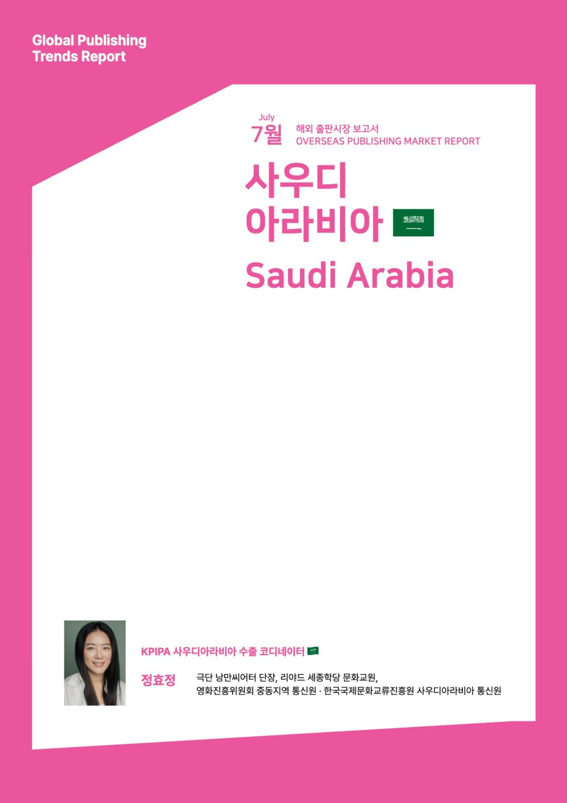
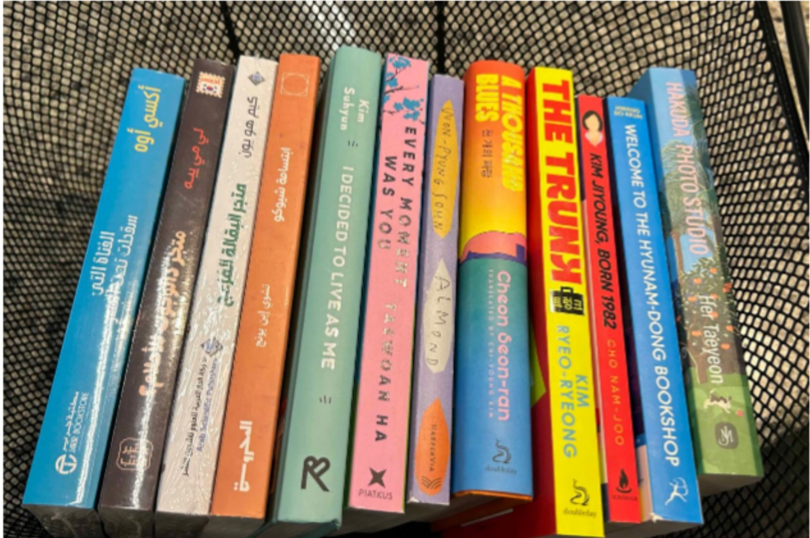
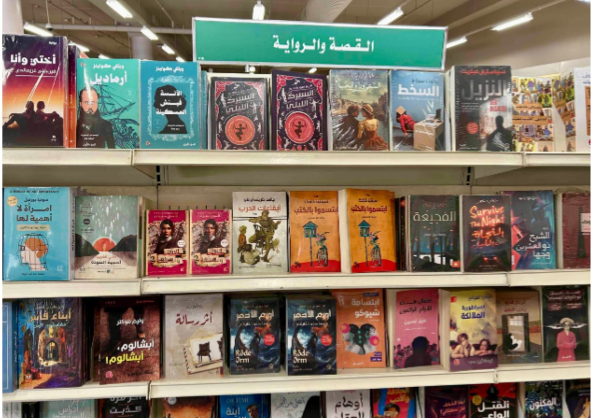
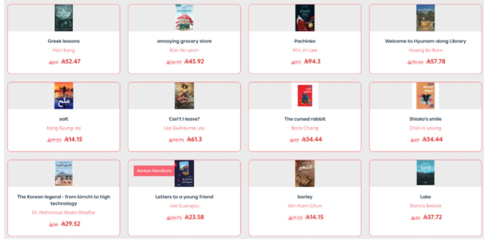

통신원이 한국출판문화산업진흥원(KPIPA) 사우디아라비아 수출 코디네이터로서 작성한 〈해외 출판시장 보고서 — 사우디아라비아〉 2026년 7월호다. KPIPA의 Global Publishing Trends Report(해외 출판시장 보고서) 시리즈로 발간됐으며, 사우디아라비아 출판시장의 최신 동향과 한국 출판콘텐츠의 진출 가능성을 다룬다.

한국문학에서 웹툰까지 — 사우디 출판시장의 변화와 한국 콘텐츠의 가능성
최근 사우디아라비아에서는 문화산업 육성을 핵심 과제로 추진하는 ‘비전 2030(Vision 2030)’ 정책에 따라 출판산업과 콘텐츠 산업이 빠르게 성장하고 있다. 리야드 국제도서전(Riyadh International Book Fair)을 비롯한 대형 도서 행사가 확대되고, 디지털 출판과 만화·웹툰 플랫폼도 활발히 성장하며 출판시장의 외연이 지속적으로 넓어지고 있다.
한국 콘텐츠에 대한 관심 역시 K-pop과 드라마를 중심으로 꾸준히 증가해 왔으며, 최근에는 한국문학과 웹툰 등 출판콘텐츠로까지 관심이 확대되는 모습을 보인다. 특히 노벨문학상 수상 이후 한국문학에 대한 국제적 관심이 높아지면서 중동 지역에서도 한국 작가와 번역 도서에 대한 관심이 점차 커지고 있다. 본 보고서는 사우디아라비아 내 한국도서의 출간 현황과 현지 독자 반응을 살펴보고, 출판콘텐츠의 확장 사례와 국내 출판사의 진출 전략을 함께 짚는다.
보고서 구성
보고서 전문은 아래와 같다. 원문 그대로 읽고 싶다면 위 ‘전체 보고서 다운로드(한글 PDF)’를 이용하면 된다 — 다운로드되는 PDF는 한글본만 제공된다.
한국문학에서 웹툰까지, 사우디 출판시장의 변화와 한국 콘텐츠의 가능성
최근 사우디아라비아에서는 문화산업 육성을 핵심 과제로 추진하는 ‘비전 2030(Vision 2030)’ 정책에 따라 출판산업과 콘텐츠 산업이 빠르게 성장하고 있다. 리야드 국제도서전(Riyadh International Book Fair)을 비롯한 대형 도서 행사가 확대되고 있으며, 디지털 출판과 만화·웹툰 플랫폼도 활발하게 성장하는 등 출판시장의 외연이 지속적으로 넓어지고 있다.
한국 콘텐츠에 대한 관심 역시 K-pop과 드라마를 중심으로 꾸준히 증가하고 있으며, 최근에는 한국문학과 웹툰 등 출판콘텐츠로까지 관심이 확대되는 모습을 보이고 있다. 특히 노벨문학상 수상 이후 한국문학에 대한 국제적 관심이 높아지면서 중동 지역에서도 한국 작가와 번역 도서에 대한 관심이 점차 증가하고 있다.
본 보고서는 사우디아라비아 내에서 유통되고 있는 한국도서의 출간 현황을 살펴보고, 현지 독자의 반응과 함께 디지털 출판 플랫폼인 망가 아라비아(Manga Arabia) 사례를 통해 한국 출판콘텐츠의 확장 가능성을 분석하고자 한다.
사우디아라비아 내 한국도서 출간 현황
사우디아라비아에서 유통되는 한국 도서는 사우디 현지 출판사가 직접 번역·출간한 것이 아니라, 이집트·레바논·UAE 등 아랍어권 번역 출판 허브에서 제작된 번역본을 수입하는 형태로 공급되고 있다. 즉, 사우디아라비아는 한국 도서의 번역·출판 주체라기보다 소비·유통 시장으로 기능하고 있다.
오프라인 유통의 경우, 사우디 최대 서점 체인인 자릴 북스토어(Jarir Bookstore)가 대표적인 창구다. 자릴 북스토어는 1974년 리야드에서 출발해 현재 사우디아라비아와 걸프협력회의(GCC) 전역으로 사업을 확장한 서점·유통 기업으로, 자체 출판 부문인 자릴 퍼블리케이션스(Jarir Publications)를 통해 국제 베스트셀러의 아랍어 번역 출판도 병행하고 있다. 필자가 2026년 5월과 7월 리야드 그라나다몰(Granada Mall) 지점과 알야스민(Al Yasmin) 지점을 직접 방문해 확인한 결과, 매장 내 동아시아 문학 코너에 일본·중국 도서와 함께 한국 도서가 진열되어 있었다. 진열 도서 수는 일본·중국 도서에 비해 상대적으로 적었으나, 소설·에세이·단편집은 물론 한국어 학습 교재, 한국 문화 관련 도서, 한국 웹툰 원작 만화까지 다양한 형태의 한국 콘텐츠가 영어 및 아랍어 번역본으로 함께 확인됐다.
자릴 북스토어를 비롯한 사우디아라비아 서점들은 도서별 판매 부수를 공식적으로 공개하는 시스템을 갖추고 있지 않으며, 온라인에서는 베스트셀러 표기, 오프라인에서는 베스트셀러 모음 진열 방식으로 수요를 간접적으로 확인할 수 있는 정도다. 다만 매장 직원에 따르면 오프라인 매장에 진열된다는 사실 자체가 판매량을 반영한 결과라고 하며, 이를 근거로 현재 사우디아라비아 오프라인 서점에서 한국 도서가 일정 수준의 판매고를 올리고 있음을 유추할 수 있다.
| 한국어 원제(영어 제목) | 작가명 | 번역 언어 | 출판사 | 분야 |
|---|---|---|---|---|
| 불편한 편의점(The Convenience Store) | 김호연(Kim Ho-yeon) | 아랍어 | 아랍 사이언티픽 퍼블리셔스(레바논) | 소설 |
| 어서 오세요, 휴남동 서점입니다(Welcome to the Hyunam-Dong Bookshop) | 황보름(Hwang Bo-reum) | 아랍어·영어 | 시드라 퍼블리싱(UAE)·블룸즈버리(영국) | 소설 |
| 쇼코의 미소(Shoko's Smile) | 최은영(Choi Eun-young)1 | 아랍어 | 알마흐루사(이집트) | 단편집 |
| 달러구트 꿈 백화점 2(Dallergut Dream Department Store 2) | 이미예(Lee Mi-ye) | 아랍어 | 아시르 알쿠투브(이집트) | 소설 |
| 살인자의 쇼핑몰(The Killer's Shopping Mall) | 강지영(Kang Ji-young) | 아랍어 | 아시르 알쿠투브(이집트) | 소설 |
| 거기, 내가 가면 안 돼요?(Can't I Leave?) | 이금이(Lee Geum-i) | 아랍어 | 아시르 알쿠투브(이집트) | 소설 |
| 어디선가 나를 찾는 전화벨이 울리고(I'll Be Right There) | 신경숙(Shin Kyung-sook) | 아랍어 | 마흐루사 센터 포 퍼블리싱(이집트) | 소설 |
| 파친코(Pachinko) | 민진 리(Min Jin Lee)2 | 아랍어·영어 | 아랍 사이언티픽 퍼블리셔스(레바논)·그랜드 센트럴 퍼블리싱(미국) | 소설 |
| 아몬드(Almond) | 손원평(Son Won-pyeong) | 영어 | 하퍼비아(미국) | 소설 |
| 82년생 김지영(Kim Jiyoung, Born 1982) | 조남주(Cho Nam-joo) | 영어 | 사이먼 앤 슈스터(미국) | 소설 |
| 트렁크(The Trunk) | 김려령(Kim Ryeo-ryeong) | 영어 | 더블데이(미국) | 소설 |
| 천 개의 파랑(A Thousand Blues) | 천선란(Cheon Seon-ran) | 영어 | 더블데이(미국) | 소설 |
| 바쿠다 사진관(Hakuda Photo Studio) | 허태연(Her Taeyeon) | 영어 | 확인 필요 | 소설 |
| 나는 나로 살기로 했다(I Decided to Live as Me) | 김수현(Kim Su-hyun) | 영어 | 확인 필요 | 에세이 |
| 모든 순간이 너였다(Every Moment Was You) | 하태완(Ha Tae-wan) | 영어 | 피아트쿠스(영국) | 에세이 |
| BTS: Icons of K-Pop | — | 영어 | 오마라북스(영국) | 전기/교양 |
| Solo Leveling Vol.5 | 추공/DUBU(Chugong/DUBU) | 영어 | 아이즈프레스(미국) | 만화 |
| 한국어 학습 교재 다수(Tuttle Korean Dictionary 외) | 다수 | 영어 | 터틀 퍼블리싱 외(미국) | 어학 |
1 현지 아랍어 번역본에 저자명이 ‘Choi In-young’으로 잘못 표기되어 있으나, 올바른 표기는 ‘Choi Eun-young’임
2 민진 리(Min Jin Lee)는 한국계 미국인 작가로, 한국 관련 콘텐츠로 포함함
출처 — 통신원 직접 방문 조사(2026. 5.~7.), 자릴 북스토어(Jarir Bookstore) 그라나다몰(Granada Mall) 지점 및 알야스민(Al Yasmin) 지점. 자릴 북스토어는 공식 판매 순위를 외부에 공개하지 않으므로 순위는 진열 순서 기준이며, 오프라인 매장 진열 자체가 현지 수요를 반영하는 지표로 볼 수 있음. 아랍어 번역 출판사는 이집트(알마흐루사·아시르 알쿠투브·마흐루사 센터 포 퍼블리싱), 레바논(아랍 사이언티픽 퍼블리셔스), UAE(시드라 퍼블리싱) 소재이며, 사우디아라비아 현지 번역 출판사는 확인되지 않음.

▲ 자릴 북스토어(Jarir Bookstore) 그라나다몰(Granada Mall) 지점에서 구입한 한국문학 모음.

▲ 알야스민(Al Yasmin) 지점의 소설과 이야기(القصة والرواية) 코너. 《쇼코의 미소》(Shoko's Smile) 아랍어판 등 한국 도서가 함께 진열되어 있다. — 출처: 필자 직접 촬영(2026. 5.~7.)
온라인 유통 채널에서도 한국문학의 입지가 확인된다. 리야드 기반 온라인 서점 다르 알순(Dar Alsun)은 자체 카테고리 분류 체계 안에 ‘한국 문학(الأدب الكوري)’을 독립 항목으로 운영하고 있다. 이는 한국문학이 ‘동아시아 문학’이나 ‘번역 문학’의 하위 항목으로 묶이는 일반적인 분류 방식에서 벗어나, 독자적인 장르로 인식되기 시작했음을 보여주는 사례다. 자릴 북스토어 온라인 스토어에서도 소설 외에 한국어 학습 교재, 한국 문화 관련 도서 등 다양한 한국 관련 콘텐츠가 유통되고 있으며, 두 채널을 합산하면 사우디아라비아에서 유통 중인 한국 관련 도서의 저변은 오프라인 매장보다 훨씬 넓다.
| 한국어 원제(영어 제목) | 작가명 | 번역 언어 | 출판사 | 분야 | 판매처 |
|---|---|---|---|---|---|
| 불편한 편의점(The Convenience Store) | 김호연(Kim Ho-yeon) | 아랍어 | 아랍 사이언티픽 퍼블리셔스(레바논) | 소설 | 다르 알순(온라인) |
| 거기, 내가 가면 안 돼요?(Can't I Leave?) | 이금이(Lee Geum-i) | 아랍어 | 아시르 알쿠투브(이집트) | 소설 | 다르 알순(온라인) |
| 쇼코의 미소(Shoko's Smile) | 최은영3 | 아랍어 | 알마흐루사(이집트) | 단편집 | 다르 알순(온라인) |
| 파친코(Pachinko) | 민진 리(Min Jin Lee)4 | 아랍어 | 아랍 사이언티픽 퍼블리셔스(레바논) | 소설 | 다르 알순(온라인) |
| 소금(Salt) | 강경애(Kang Kyeong-ae) | 아랍어 | 사프사파 퍼블리싱(이집트) | 소설 | 다르 알순(온라인) |
| 보리(Barley) | 김남천(Kim Nam-chun) | 아랍어 | 사프사파 퍼블리싱(이집트) | 소설 | 다르 알순(온라인) |
| 어린 벗에게(Letters to a Young Friend) | 이광수(Lee Gwang-su) | 아랍어 | 사프사파 퍼블리싱(이집트) | 산문/서한 | 다르 알순(온라인) |
| 아몬드(Almond) | 손원평(Son Won-pyeong) | 아랍어 | 사프사파 퍼블리싱(이집트) | 소설 | 다르 알순(온라인) |
| 희랍어 시간(Greek Lessons) | 한강(Han Kang) | 아랍어 | 타쉬킬 퍼블리싱(이집트) | 소설 | 다르 알순(온라인) |
| 저주토끼(Cursed Bunny) | 정보라(Bora Chung) | 아랍어 | 다르 알마흐루사(이집트) | 단편집 | 다르 알순(온라인) |
| 어서 오세요, 휴남동 서점입니다(Welcome to the Hyunam-Dong Bookshop) | 황보름(Hwang Bo-reum) | 아랍어·영어 | 시드라 퍼블리싱(UAE)·블룸즈버리(영국) | 소설 | 다르 알순·자릴(온라인) |
| 메리골드 마음 세탁소(Marigold Mind Laundry) | 윤정은(Jungeun Yun) | 영어 | 펭귄(영국) | 소설 | 자릴(온라인) |
| 비가 오면 열리는 상점(The Rainfall Market) | 유영광(You Yeong-gwang) | 영어 | 펭귄(영국) | 소설 | 자릴(온라인) |
| 연남동 세탁소(Yeonnam-dong's Smiley Laundromat) | 김지윤(Kim Jiyun) | 영어 | 쿼커스(영국) | 소설 | 자릴(온라인) |
| 모두와 잘 지내지 않아도 괜찮아(It's Okay Not to Get Along with Everyone) | 댄싱 스네일(Dancing Snail) | 영어 | 보니어 퍼블리싱(영국) | 에세이/일러스트 | 자릴(온라인) |
| 나는 게으른 게 아니라 에너지 절약 모드(I'm Not Lazy, I'm On Energy Saving Mode) | 댄싱 스네일(Dancing Snail) | 영어 | 보니어 퍼블리싱(영국) | 에세이/일러스트 | 자릴(온라인) |
| 82년생 김지영(Kim Jiyoung, Born 1982) | 조남주(Cho Nam-joo) | 영어 | 사이먼 앤 슈스터(미국) | 소설 | 자릴(온라인) |
| 한국어 학습 교재 다수(Tuttle Korean Dictionary 외) | 다수 | 영어 | 터틀·베를리츠·콜린스·DK 등 | 어학 | 자릴(온라인) |
3 현지 표기 ‘Choi In-young’은 오기이며, 올바른 표기는 ‘Choi Eun-young’임
4 민진 리(Min Jin Lee)는 한국계 미국인 작가로, 한국 관련 콘텐츠로 포함함
출처 — 자릴 북스토어 온라인 스토어(jarir.com/sa-en), 다르 알순(daralsun.com), 2026. 7. 기준. 아랍어 번역 출판사는 이집트(알마흐루사·아시르 알쿠투브·사프사파 퍼블리싱·타쉬킬·다르 알마흐루사), 레바논(아랍 사이언티픽 퍼블리셔스), UAE(시드라 퍼블리싱) 소재이며, 사우디아라비아 현지 번역 출판사는 확인되지 않음.

▲ 다르 알순(Dar Alsun) 온라인 서점의 한국문학 카테고리 화면 중 일부. — 출처: 다르 알순, daralsun.com(2026. 7. 기준)
[표 1]과 [표 2]를 비교하면 사우디아라비아 내 한국 출판콘텐츠의 유통 구조가 오프라인과 온라인에서 뚜렷한 차이를 보인다. 자릴 북스토어 오프라인 매장은 글로벌 베스트셀러와 영상화 작품 등 판매성이 검증된 소설을 중심으로 진열하는 반면, 온라인에서는 《희랍어 시간》, 《저주토끼》, 《소금》 등 보다 다양한 장르와 문학성을 갖춘 작품까지 유통되고 있다. 또한 오프라인에서는 영어판의 비중이 상대적으로 높은 반면, 온라인에서는 아랍어 번역본이 확대되는 양상을 보여 온라인 채널이 현지 아랍어 독자층을 대상으로 한국문학을 확산시키는 역할을 수행하고 있음을 시사한다. 이러한 차이는 오프라인이 대중성과 판매성을 검증하는 공간이라면, 온라인은 작품 다양성을 확대하는 플랫폼으로 기능하고 있음을 보여주는 사례라 할 수 있다.
한국 도서의 아랍어 번역 출판은 이집트(알마흐루사·아시르 알쿠투브·사프사파 퍼블리싱·타쉬킬·다르 알마흐루사), 레바논(아랍 사이언티픽 퍼블리셔스), UAE(시드라 퍼블리싱) 등 아랍어권 출판 허브에서 이루어지고 있으며, 사우디아라비아 현지에서 직접 번역·출간하는 출판사는 확인되지 않는다. 특히 이집트 출판사 사프사파 퍼블리싱(Sefsafa Publishing)은 강경애의 《소금》, 김남천의 《보리》, 이광수의 《어린 벗에게》 등 한국 근현대 고전 문학을 집중적으로 아랍어로 번역·출판하고 있어 주목된다. UAE의 신생 출판사 시드라 퍼블리싱(Sidra Publishing)이 황보름의 《어서 오세요, 휴남동 서점입니다》 아랍어판을 출간한 사례는 아랍어 번역 출판의 지리적 범위가 이집트·레바논 중심에서 UAE로도 확장되고 있음을 보여준다.
한국도서 및 한국 작가에 대한 현지 반응
사우디아라비아에서 한국문학에 대한 관심은 비교적 최근에 형성되기 시작했다. 불과 1~2년 전만 해도 현지 서점에서 한국문학을 접하기 쉽지 않았으나, 한국 드라마·영화·음악 콘텐츠가 중동 지역 젊은 층을 중심으로 빠르게 확산되면서 출판 분야로도 그 관심이 번지는 흐름이 감지되고 있다.
자릴 북스토어 그라나다몰 지점에서 근무하는 직원 곤잘라그디(Gonzalagdi)는 필자와의 현장 인터뷰에서 동아시아 문학 독자층의 변화를 직접적으로 언급했다. 그는 과거에는 일본문학을 찾는 고객이 주를 이뤘으나, 최근 들어 한국 드라마와 영화, 케이팝의 영향으로 한국문학을 찾는 고객이 눈에 띄게 늘었다고 전했다. 그가 현재 매장에서 가장 반응이 좋은 한국문학 작품으로 꼽은 것은 황보름의 《어서 오세요, 휴남동 서점입니다》였다. 그는 또한 오프라인 매장 진열 자체가 판매량을 반영한 결과임을 강조하며, 현재 한국 도서가 동아시아 문학 코너에서 꾸준히 자리를 유지하고 있다고 밝혔다.
진열된 작품들의 면면을 살펴보면, 대부분이 국내에서도 폭넓은 독자층을 확보한 베스트셀러다. 성장 서사를 다룬 《아몬드》, 여성의 삶과 사회 구조를 정면으로 다룬 《82년생 김지영》, 공동체와 위로의 가치를 그린 《불편한 편의점》 등은 이미 다수의 언어로 번역되어 해외 독자들과 만나고 있는 작품들이다. 또한 《트렁크》처럼 OTT 드라마 시리즈의 원작으로 알려진 작품이 포함된 것은 영상 콘텐츠의 인기가 원작 도서에 대한 수요로 이어지는 경로가 실제로 작동하고 있음을 보여주는 사례로 주목된다.
한국 소설·에세이 외에도 한국어 학습 교재와 BTS 전기 《BTS: Icons of K-Pop》, 한국 웹툰 원작 만화 《솔로 레벨링(Solo Leveling)》 영어판까지 함께 진열되어 있었다는 점도 주목할 만하다. 이는 현지 독자들의 관심이 한국문학에 그치지 않고 한국어·한국문화 전반으로 확장되고 있음을 보여주는 징표로 읽힌다.
온라인 채널에서도 유사한 흐름이 확인된다. 다르 알순이 ‘한국 문학’을 독립 카테고리로 운영하고 있다는 점은 한국문학이 단순한 번역 문학의 일부로 소비되는 수준을 넘어, 장르로서의 정체성을 인정받기 시작했다는 신호로 읽힌다.
망가 프로덕션(Manga Productions): 국가 주도 콘텐츠 산업의 부상
망가 프로덕션(Manga Productions)은 사우디아라비아 비영리 재단 미스크 파운데이션(MiSK Foundation) 산하 콘텐츠 기업으로, 애니메이션·만화·게임 분야의 제작과 IP(지식재산권) 개발·유통을 핵심 사업으로 운영하고 있다. 비전 2030(Vision 2030) 기조 아래 콘텐츠 산업을 국가 미래 성장 동력으로 육성한다는 방향 속에서 설립된 기업으로, 글로벌 콘텐츠 제작 시스템 도입과 현지 청년 인재 양성을 주요 목표로 내세우고 있다.
2025년 연간보고서에 따르면, 회사는 사우디 문화와 지역 서사를 기반으로 한 오리지널 콘텐츠 제작에 집중하는 한편, 애니메이션·게임·더빙 분야 교육 프로그램과 워크숍을 운영하여 4,000명 이상의 교육 참가자를 지원했다. 아랍어 현지화(localization)를 핵심 전략으로 삼아 번역·언어 감수·게임 내 아랍어 통합·디지털 플랫폼 적용을 포괄하는 자체 현지화 시스템도 구축했다.
주목할 점은 망가 프로덕션이 일본 애니메이션·게임 산업과의 전략적 연계를 적극적으로 추진하고 있다는 것이다. 회사는 일본 도쿄에 별도 오피스를 운영하며, 이를 세계 주요 애니메이션·게임 생태계와 연결되는 전략 거점으로 활용하고 있다. 2025년에는 일본 애니메이션 IP인 《캡틴 츠바사》와 《그랜드라이저 U》의 중동 지역 배급에 참여했으며, ‘애니메 재팬(Anime Japan) 2025’에 동아시아 외 기업 최초의 공식 스폰서로 이름을 올렸다. 이는 사우디가 콘텐츠 소비국의 역할에 머물지 않고, 일본식 제작 시스템을 자국 산업에 적극적으로 도입하려는 전략적 의도를 반영한다.
출처 — 망가 프로덕션(Manga Productions) 2025년 연간보고서, manga.com.sa
망가 아라비아(Manga Arabia): 한국 웹툰의 공식 아랍어 서비스 진출
망가 아라비아(Manga Arabia)는 사우디 리서치 앤 미디어 그룹(Saudi Research and Media Group, SRMG) 산하의 아랍어 만화 플랫폼이다. 2025년 한국의 키다리스튜디오(Kidari Studio)와 브이브로(V-Bros)와 협력 계약을 체결하고, 한국 웹툰의 아랍어 서비스를 공식적으로 시작했다. 서비스 개시 작품으로는 《메디컬 환생》, 《식물인간》, 《신기록》이 포함됐다.
《식물인간》(글그림 진아)은 거대 회귀식물 ‘Z’로 인해 전 세계에 퍼진 재앙 속에서 치료법을 찾아 세계를 떠도는 식물학자들의 이야기를 담은 힐링 판타지 작품이다. 《메디컬 환생》(글그림 키다리스튜디오)은 실패한 외과 의사가 중학생 시절로 회귀해 새로운 삶을 살아가는 회귀 판타지 웹툰이며, 《신기록》(글그림 리율)은 신을 기록하는 소녀 세진과 인간이 인지하지 못하는 존재들의 이야기를 담은 한국형 판타지·괴담 웹툰이다.
망가 아라비아 유스(Manga Arabia Youth) 앱 내 독자 반응을 살펴본 결과, 세 작품 가운데 가장 활발한 반응을 이끌어낸 것은 《메디컬 환생》이었다. 다음 시즌 공개를 요청하는 댓글과 업로드 속도에 대한 불만이 다수 확인됐으며, 일부 이용자들은 한국 원작의 연재 분량과 아랍어 서비스 간 격차를 지적하기도 했다. 《식물인간》은 스토리와 작화에 대한 호평이 많았던 반면, 아랍어 번역 표현에 대한 아쉬움도 함께 제기됐다. 전반적으로 댓글 수가 많지 않아 아직 본격적인 팬덤 형성 단계에는 이르지 못한 것으로 보인다.
현재 중동 만화 시장에서 일본 콘텐츠가 차지하는 비중은 여전히 높으며, 한국 웹툰은 제한적인 규모로 서비스되고 있다. 그러나 망가 아라비아를 통한 공식 라이선스 기반의 아랍어 서비스 개시는 정식 계약 경로로 한국 웹툰이 중동 시장에 진입했다는 점에서 의미 있는 출발점으로 평가된다. 자릴 북스토어에서도 한국 웹툰 원작 만화인 《솔로 레벨링》 영어판이 일본 만화 코너 인근에 함께 진열되어 있었던 점은 한국 만화·웹툰 콘텐츠에 대한 오프라인 유통 수요도 일정 수준 존재함을 보여준다.
출처 — 망가 아라비아(Manga Arabia) 공식 웹사이트, mangaarabia.com · 망가 프로덕션(Manga Productions) 공식 웹사이트, manga.com.sa
시사점 및 국내 출판사의 진출 전략
이상의 조사 내용을 종합하면, 사우디아라비아 출판시장에서 한국 콘텐츠는 현재 수요 형성의 초입 단계에 있다. 한국문학은 동아시아 문학 코너를 통해 현지 독자들과 만나고 있으며, 한국어 학습 교재와 한국 문화 관련 도서, 웹툰 원작 만화까지 한국 콘텐츠의 저변이 다양하게 확산되고 있다. 다만 이 흐름이 지속적인 시장 확대로 이어지기 위해서는 구조적인 과제를 해결하기 위한 전략적 접근이 필요하다.
자릴 북스토어 등 현지 대형 유통망과의 직접 협력
자릴 북스토어는 사우디아라비아와 GCC 전역에 걸친 대표적인 서점·유통 기업일 뿐 아니라, 자체 출판 부문인 자릴 퍼블리케이션스(Jarir Publications)를 통해 번역 출판 기능도 함께 수행하고 있다. 현지 대표 출판사인 오베이칸 퍼블리싱(Obeikan Publishing) 역시 아랍어 번역 출판과 디지털 콘텐츠 분야에서 활발한 사업을 전개하고 있어 잠재적인 협력 파트너로 검토할 만하다. 국내 출판사는 단순한 도서 수출을 넘어 이들 기업과 바이어 계약, 공동 출판, 판권 계약 등 다양한 협력 모델을 적극 모색할 필요가 있다.
사우디 현지 번역·출판 협력 체계 구축
현재 사우디아라비아에서 판매되는 한국 도서의 아랍어 번역본은 대부분 이집트·레바논·UAE 등 아랍어권 국가의 출판사가 제작한 것으로 확인됐다. 조사 범위 내에서는 한국 도서를 직접 번역·출간하는 사우디 현지 출판사는 확인되지 않았다. 이는 사우디 내 한국 출판콘텐츠에 대한 수요는 형성되고 있지만, 이를 현지에서 번역·출판하는 산업 기반은 아직 충분히 구축되지 않았음을 보여준다.
이러한 구조는 국내 출판사에게 새로운 진출 기회를 시사한다. 기존처럼 해외 아랍어권 번역 출판사를 거치는 간접 진출 방식에서 나아가, 사우디 현지에서 번역·출판·유통을 수행할 수 있는 파트너를 선제적으로 발굴할 필요가 있다. 특히 자체 출판 기능과 대형 유통망을 함께 보유한 자릴 퍼블리케이션스(Jarir Publications)와 오베이칸 퍼블리싱(Obeikan Publishing)은 한국 도서의 현지 번역·출판 및 유통을 위한 잠재적 협력 대상으로 검토할 만하다. 이들과의 협력을 통해 번역 기획 단계부터 현지 독자의 문화적 특성과 수요를 반영할 수 있을 뿐 아니라, 오프라인 서점과 온라인 판매망을 연계한 효율적인 시장 진출도 기대할 수 있다. 한국 도서에 대한 현지 수요가 확대되고 있는 현 시점은 사우디 출판사와의 직접 협력 체계를 구축하고, 현지 번역·출판 기반을 선제적으로 마련할 수 있는 적기로 평가된다.
출처 — 오베이칸 퍼블리싱(Obeikan Publishing), obeikan.com.sa/obeikan-publishing
번역 품질과 아랍어 현지화 수준 제고
망가 아라비아를 통해 서비스된 한국 웹툰에 대해 일부 독자들이 아랍어 번역 표현의 어색함을 지적했다는 점은 시사하는 바가 크다. 아랍어는 지역마다 방언 편차가 크고 표현 문화가 다양한 언어인 만큼, 번역의 양적 확대와 함께 현지 독자에게 자연스럽게 읽히는 번역 품질 확보가 병행되어야 한다. 이는 출판 콘텐츠뿐 아니라 웹툰 등 디지털 콘텐츠에도 동일하게 적용되는 과제다.
OTT 원작 도서의 전략적 활용
자릴 북스토어에서 확인된 진열 도서 가운데 OTT 드라마 원작 작품이 포함되어 있다는 사실은 영상 콘텐츠의 인기가 원작 도서에 대한 관심으로 이어지는 경로가 사우디 독자들 사이에서도 작동하고 있음을 보여준다. 이미 현지에서 인지도를 확보한 드라마·영화의 원작 도서를 우선 번역·출간하는 전략은 마케팅 비용을 줄이면서도 독자의 관심을 효과적으로 끌어낼 수 있는 방법이다.
저작권 보호 기반의 디지털 콘텐츠 진출 전략
현지 출판 관계자에 따르면, 사우디아라비아에서는 전자책 수요 자체는 존재하지만 저작권 보호 인프라의 미비로 인해 출판사들이 전자책 출시를 꺼리는 상황이다. 불법 복제본이 왓츠앱(WhatsApp)·텔레그램(Telegram) 등을 통해 무료로 유통되는 것이 주된 원인으로, 현재 이용 가능한 전자책 플랫폼은 자릴 리더(Jarir Reader)와 아마존 킨들(Amazon Kindle)에 그치는 것으로 파악된다. 한국 출판사가 디지털 콘텐츠로 사우디 시장에 진출하고자 할 경우 이러한 저작권 환경을 면밀히 고려한 전략이 필요하며, 웹툰은 망가 아라비아와 같은 공식 라이선스 기반 플랫폼을 통한 진출이 가장 현실적인 대안으로 판단된다.
모바일 플랫폼 기반 웹툰 시장 확대
망가 아라비아 사례는 현지 플랫폼과의 공식 라이선스 계약이 중동 시장 진출의 현실적인 경로임을 보여준다. 사우디아라비아의 전자책 소비 문화는 아직 성숙 단계에 이르지 못했지만, 모바일 앱 기반의 웹툰 플랫폼은 상대적으로 진입 장벽이 낮다. 다만 연재 속도와 업로드 주기에 민감한 독자 반응을 고려할 때, 현지 서비스 운영 방식에 대한 면밀한 조율이 필요하다.
비전 2030을 통해 문화산업 육성을 국가 핵심 전략으로 추진하고 있는 사우디아라비아는 출판·콘텐츠 시장의 성장 잠재력이 높은 시장이다. 현재 한국 출판콘텐츠는 아직 초기 수요 형성 단계에 머물러 있지만, 현지 독자의 관심은 꾸준히 확대되고 있다. 향후에는 사우디 현지 출판사 및 유통기업과의 직접 협력 체계 구축, 현지 수요를 반영한 번역·출판 확대, 저작권 보호 기반의 디지털 플랫폼 활용을 중심으로 한 전략적 협력이 이루어진다면 한국 출판콘텐츠의 지속적인 시장 확대가 가능할 것으로 기대된다.
발행 정보
— 발행: 한국출판문화산업진흥원(KPIPA) · 2026년 7월 31일
— 시리즈: Global Publishing Trends Report — 해외 출판시장 보고서(Overseas Publishing Market Report)
— 원문: kpipa.or.kr